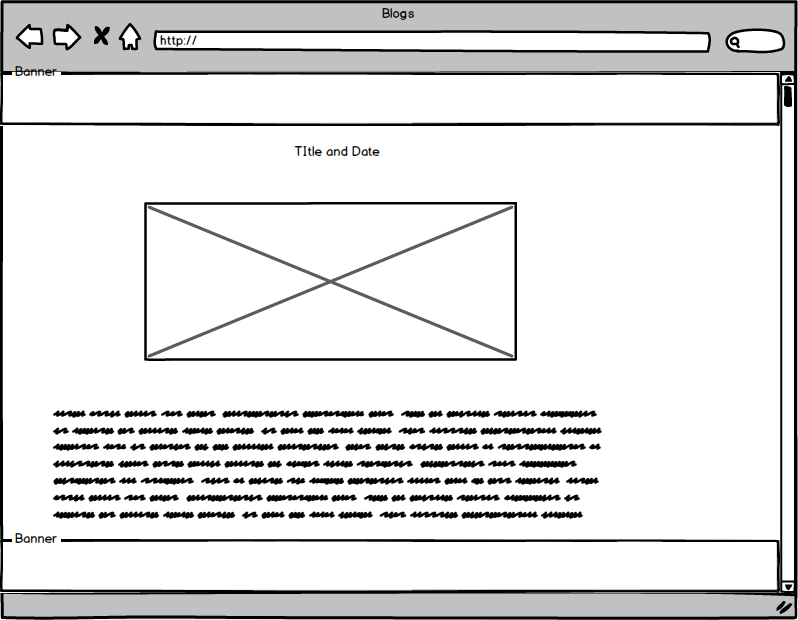

this is a cheat sheet
What is an Object and how to create it?
According to kirupa, everything you see and touch in code is an object. Objects are created in Javascript by cloning them from other objects. We start off with a parent object and create child objects from it. The example that kirupa uses is a circle. Let's say we have an object called theCircle. We can create a new object called greenCirle by simply using the method below.
var greenCircle = Object.create(theCircle);
At the same time, these child objects can have properties (name associated with a value). We can add a color to our circle by giving it a green color. Also, note that we can use dot or bracket notation. The third example is literal notation.
var greenCircle = Object.create(theCircle); greenCircle["color"] = "#669900"; var greenCircle = Object.create(theCircle); greenCircle.color = "#669900"; var greenCircle = { color: "#669900" };
The example below that I found useful is from A Drop of JS.
var superHuman = { usePower: function () { console.log(this.superPower + "!"); } }; var banshee = Object.create(superHuman, { name: { value: "Silver Banshee" }, superPower: { value: "sonic wail" } }); // Outputs: "sonic wail!" banshee.usePower();
The object superHuman is seen as a parent object of banshee. The sumerHuman has a prototype property that points you to the Object type. Object.create is used to make a new object that takes superHuman as a argument. In addition, other functionalities can be created that inherits from superHuman. Please see A Drop's example below.
var superHero = Object.create(superHuman, { allegiance: { value: "Good" }, saveTheDay: { value: function () { console.log(this.name + " saved the day!"); } } }); var marvel = Object.create(superHero, { name: { value: "Captain Marvel" }, superPower: { value: "magic" } }); // Outputs: "Captain Marvel saved the day!" marvel.saveTheDay();As a review, the superHuman prototype points to a generic JS Object. Thus, it'll inherit methods such as constructor, isPrototypeOf, and toString. Banshee's prototype inherits that of the superHuman just like superHero inherits from superHuman. 